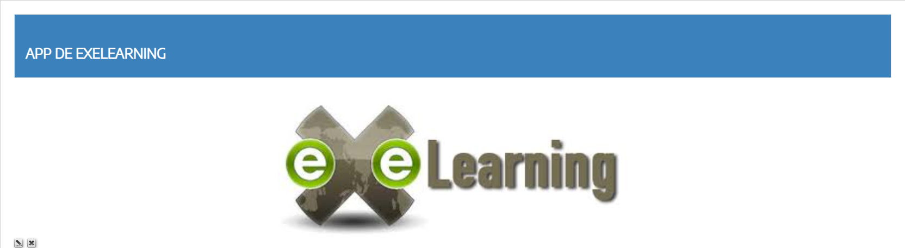
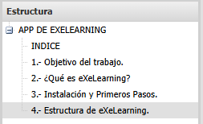
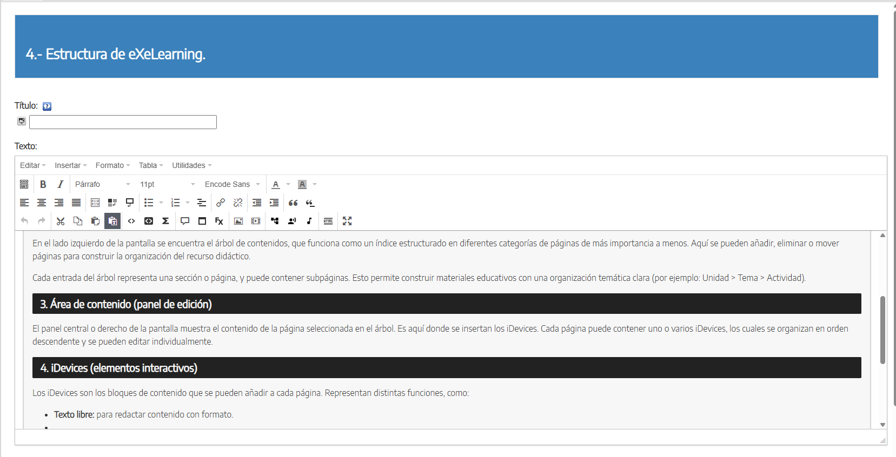
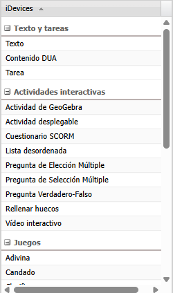

Estructura
eXeLearning cuenta con una estructura bien organizada que permite al usuario crear contenidos de forma ordenada y accesible. Su diseño facilita tanto la edición como la navegación de los materiales creados. A continuación, se detallan los principales elementos de la app:
1. Proyecto eXeLearning
Todo el contenido que se crea en eXeLearning se organiza dentro de un proyecto, que se guarda con la extensión .elp. Este archivo contiene toda la información: texto, imágenes, enlaces, actividades y la estructura del contenido. Se puede guardar, volver a abrir y editar en cualquier momento.

2. Árbol de contenidos (estructura)
En el lado izquierdo de la pantalla se encuentra el árbol de contenidos, que funciona como un índice estructurado en diferentes categorías de páginas de más importancia a menos. Aquí se pueden añadir, eliminar o mover páginas para construir la organización del recurso didáctico.
Cada entrada del árbol representa una sección o página, y puede contener subpáginas. Esto permite construir materiales educativos con una organización temática clara (por ejemplo: Unidad > Tema > Actividad).

3. Área de contenido (panel de edición)
El panel central o derecho de la pantalla muestra el contenido de la página seleccionada en el árbol. Es aquí donde se insertan los iDevices. Cada página puede contener uno o varios iDevices, los cuales se organizan en orden descendente y se pueden editar individualmente.

4. iDevices (elementos interactivos)
Los iDevices son los bloques de contenido que se pueden añadir a cada página. Representan distintas funciones, como:
- Texto libre: para redactar contenido con formato.
- Actividad: permite añadir instrucciones o tareas.
- Preguntas de opción múltiple, verdadero/falso, rellenar huecos: ideales para la evaluación formativa.
- Galería de imágenes, incrustación de video/audio: para enriquecer el contenido multimedia.
- SCORM Quiz: permite generar evaluaciones compatibles con plataformas virtuales.
